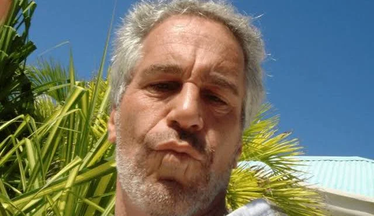

V roce 2005 podala jistá žena na policii v Palm Beach prohlášení, že její čtrnáctiletá nevlastní dcera byla dopravena do Epsteinovy tamní vily, kde se pro něj měla svléknout a provést mu masáž.[18] Policie na základě toho začala jedenáctiměsíční utajované vyšetřování, do kterého se později přidala FBI.[14] Během něj bylo zjištěno, že Epstein platil za eskort dívek do svého sídla, se kterými měl následně sex, přičemž některé z nich byly nezletilé.[19] V rámci vyšetřování bylo pod přísahou vyslechnuto 17 svědků a podle jejich výpovědí bylo nalezeno velké množství důkazů (například fotografie), které výpovědi podporovaly.[20] Podle článku v International Business Times z roku 2006 měl Epstein v sídle instalovaný kamerový systém, který sexuální akty s dívkami nahrával. V roce 2015 (již po verdiktu) přišel deník The Guardian s článkem, podle něhož Epstein sexuální masáže a služby nezletilých dívek pronajímal celebritám, jež ve svém sídle hostil. FBI v té době vyslechla dalších 36 dívek, které měly být k tomuto účelu zneužity. Výslechy přinesly mnohé navzájem potvrzené skutečnosti.[14] Vyšetřování vyústilo v 53stránkové federální obvinění. Epstein si na svoji obhajobu zaplatil několik elitních právníků, kteří dosáhli toho, že případ byl projednáván neveřejně a dívky, které se staly obětí sexuálního zneužití, nemohly svědčit, protože se o detailech případu nedozvěděly. Epstein byl nakonec odsouzen k 18 měsícům „vazby s pracovním povolením“ (z nichž vykonal 13 měsíců). Po tuto dobu přespával v prázdném soukromém křídle zařízení v Palm Beach (stát Florida) s tím, že jinak byl po 6 dní v týdnu na 12 hodin denně propouštěn na svobodu – v tomto období ho jeho soukromý řidič vozil do práce a navečer zpět. Epstein jinak nebyl nijak omezen, mohl cestovat po Státech i létat svým soukromým letadlem na Panenské ostrovy.[21] Na konci svého podmínečného propuštění bylo jeho jméno vloženo do registru sexuálních deviantů,[chybí zdroj] úroveň 3 (vysoké riziko recidivismu).